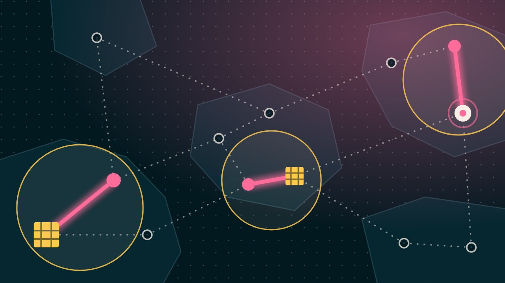

Rockstar mapeó toda la red de suministro de las pandillas de Leonida, aunque solo veas trozos sueltos
Un director de diseño de Rockstar ha contado a IGN que el reparto de droga entre las bandas de GTA 6 está pensado de principio a fin, aunque el juego solo deje ver fragmentos de esa cadena.
Por Redacción Golpe Diario · Publicado el

Qué ha pasado
Steven Messinger, director de diseño de mundo abierto en Rockstar Games, ha explicado a IGN cómo se construyó la economía criminal de las bandas de Leonida en GTA 6. Según recoge el medio alemán MIXED News, Messinger contó que el estudio diseñó «dónde se origina la droga, quién la trae, cómo se reparte entre los distintos campamentos y cómo llega hasta el comprador de la calle». No es un detalle suelto de guion: es una cadena completa, pensada desde el origen hasta la venta final.
Lo llamativo es que el jugador no llega a ver ese proceso entero durante la partida. Messinger reconoció, según la misma fuente, que «los jugadores solo recogerán fragmentos de ese cuadro más grande». Rockstar construyó toda la maquinaria aunque la mayor parte se quede fuera de cámara: no hay una misión que explique el reparto completo de principio a fin.
La razón que da Messinger tiene que ver con una forma de trabajar que Rockstar repite desde hace años: inventar una historia detallada para casi todo, aunque nunca llegue a contarse al jugador, y mantenerla siempre igual. Representar el proceso entero, aunque quede escondido, hace que las pocas veces que algo de él asoma resulte creíble, en lugar de parecer un decorado montado solo para esa escena.
En la práctica, esa maquinaria se nota en lo que ya se puede tocar en el mapa de Leonida: decenas de campamentos y almacenes de bandas, al margen de las misiones de la historia, que se pueden asaltar en modo libre tantas veces como se quiera. Según la guía de Respec.net, hay cerca de 40 operaciones repartidas entre bandas como Kingfishers, La Polilla Negra, Kolt & Associates, Final Chapter, San4San, Guardia Brothers, PTT Youngin's y M7, y cada una guarda su propio tipo de mercancía, armas y vehículos.
Esa misma guía señala que el botín de cada operación ronda, según el local, desde unos 6.000 u 11.000 dólares en una casa de acopio hasta cerca de 50.000 dólares en mercancía dentro de un motel, y que los locales vuelven a llenarse pasado un tiempo, así que no hace falta guardarlos para una única visita. Son cifras de una guía de la comunidad, no datos publicados por Rockstar, pero sirven para hacerse una idea de la diferencia entre unas bandas y otras.
Dicho de otro modo: la entrevista de Messinger no añade una misión ni un lugar nuevo que visitar, pero explica por qué cada banda de Leonida se siente distinta a las demás aunque el juego nunca lo diga con todas las letras. La red completa existe en el diseño del juego; lo que tú ves al robar un campamento es solo la parte de arriba de ese sistema.
Qué significa para ti
- Si quieres comprobar con tus propios ojos de lo que habla Messinger, visita campamentos de bandas distintas (Kingfishers, PTT Youngin's, Kolt & Associates, entre otras) y compara lo que encuentras dentro: cada una mueve su propio tipo de mercancía, armas y vehículos, y esa diferencia es la parte visible de la red que describe Rockstar.
- No busques una misión única que cuente la cadena completa, porque no existe, según cuenta el propio Messinger: lo que Rockstar diseñó queda, en su mayor parte, fuera de lo que juegas.
- Las operaciones de bandas se reponen pasado un tiempo, según Respec.net, así que puedes volver más adelante al mismo almacén en vez de buscar uno nuevo cada vez.
- Si quieres el paso a paso para entrar y vaciar uno de estos almacenes, el artículo sobre cómo asaltar tiendas en modo libre ya explica la mecánica con un ejemplo concreto de PTT Youngin's.
Contrastado con: MIXED News · Respec.net
Sigue leyendo
Dónde está la caja fuerte del refugio de moteros del capítulo final en GTA 6, y su código
El mayor escondite de la banda de moteros del capítulo final de GTA 6 guarda tres objetos de valor: una caja fuerte, un revólver especial y una moto única. Esta es la ubicación exacta de cada uno y el código para abrir la caja.
Las películas y series que GTA 6 esconde: de Tiburón a Jungla de Cristal
GTA 6 está lleno de guiños al cine y la televisión que varios medios han ido encontrando en misiones secundarias, encuentros aleatorios y rincones del mapa, desde un final calcado de Tiburón hasta un edificio de oficinas que recuerda a Jungla de Cristal.
El mapa de fans que señala todos los coleccionables de GTA 6 (y por qué conviene usarlo con cuidado)
La comunidad de GTABase ha montado un mapa interactivo con cada coleccionable y punto de interés de Leonida. Es muy útil para el 100 %, pero también enseña cosas que todavía no has vivido en la historia.